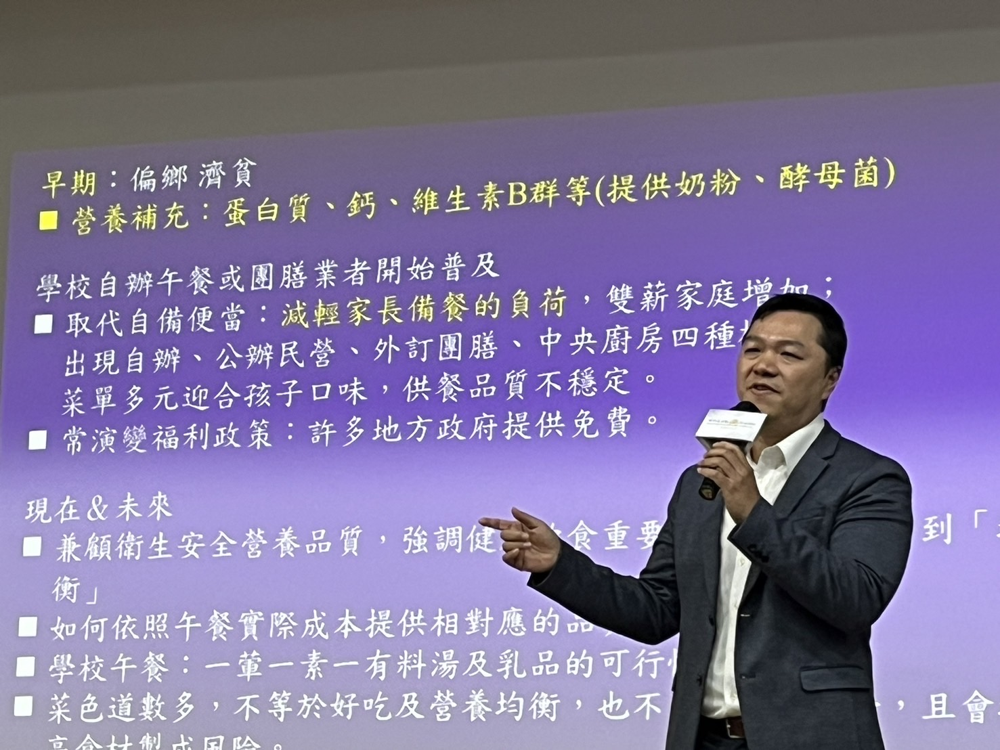

一批苯駢芘超標的沙拉油，兩天內被追出流進全國 881 所學校與幼兒園。制度追得到——但制度還沒寫進法律。這份懶人包，帶你從一瓶油，看懂台灣學校午餐的供餐、財政、營養與立法全貌。
整理／國教行動聯盟（民間團體）· 資料來源：《食力》2026 食育力城市大調查、教育部、衛福部食藥署、監察院、立法院、國際研究，及本聯盟「城市食育力與學校午餐財政監督資料庫」。
這不是學校或團膳的錯，破口在上游油廠的製程與業者延遲通報。學校是最下游的受害端。
因為全台每天有 164 萬名學生在校吃飯，其中逾三分之二仰賴民間業者供餐；而問題油通過了供應商自檢，學校端根本沒有實驗室能自己驗出致癌物。
| 模式 | 佔比 |
|---|---|
| 公辦公營 | 34% |
| 公辦民營 | 32% |
| 民辦民營 | 34% |
從偏鄉濟貧的一杯奶粉，到今天全國免費——學校午餐的角色，早已從「救濟」變成每天兩百多萬份的公共政策。
115 學年度起全國 22 縣市免費，一年約 283 億元；但這筆錢多是地方各自宣布、無中央法律保障，而且各縣市投入差距懸殊。
目前僅少數縣市公開免費午餐佔歲出比率，此為示例；三縣均約 2% 上下，佔整體歲出比例有限。
| 縣市 | 自籌占歲出% | 食育星等 |
|---|---|---|
| 台北市 | 65.3 | 4 |
| 新北市 | 48.0 | 5 |
| 台中市 | 47.7 | 5 |
| 新竹市 | 46.2 | 3 |
| 高雄市 | 42.0 | 4 |
| 桃園市 | 41.5 | 5 |
| 台南市 | 33.7 | 4 |
| 金門縣 | 33.6 | 3 |
| 新竹縣 | 32.3 | 4 |
| 嘉義市 | 25.6 | 3 |
| 宜蘭縣 | 22.9 | 5 |
| 基隆市 | 22.4 | 2 |
| 苗栗縣 | 22.0 | 4 |
| 彰化縣 | 17.9 | 4 |
| 雲林縣 | 15.9 | 4 |
| 花蓮縣 | 14.9 | 3 |
| 嘉義縣 | 14.3 | 5 |
| 屏東縣 | 14.2 | 4 |
| 南投縣 | 13.7 | 4 |
| 台東縣 | 9.4 | 4 |
| 澎湖縣 | 9.4 | 2 |
| 連江縣 | 7.8 | 1 |
| 縣市 | 食育星等 | 自籌占歲出 | 補助依存度 | 解讀 |
|---|---|---|---|---|
| 嘉義縣 | ★★★★★ 六連霸 | 14.3% | 62.8% | 最依賴補助，卻年年奪冠 → 靠制度 |
| 宜蘭縣 | ★★★★★ 全國第 1 | 23.0% | 58.9% | 食育冠軍、財政偏弱 → 靠制度 |
| 台北市 | ★★★★ | 65.3% | 13.1% | 財政最自主，食育卻非頂尖 |
台灣學童的營養問題，關鍵不在「不夠」，而在「不均」——最缺的是鈣與蔬果，蛋白質反而過量。
| 地區 | 學生數 |
|---|---|
| 日本 | 約550 |
| 台灣全國平均 | 2897 |
| 彰化縣 | 9905 |
現行《學校衛生法》規定 40 班以上學校才須置營養師 1 人，許多小校根本沒有專責人力。食安通報一來，封存、通知家長、盤點供應鏈，都需要專業支持。
先進國家的共同設計原則：把營養標準、在地食材、財源責任寫進法律，成為支用公共財源的條件——而不是繫於地方財政與選舉承諾的浮動裁量。
免費與「法定營養充足」雙重入法；芬蘭 1943 年立法、運作逾 70 年。瑞典世代研究：吃過營養午餐的孩子，終身收入高 +3%（貧困家庭 +6%）。
2010 年後立法推「直營供餐」、禁外包，2023 年 97.9% 學校自營；食材要求有機／無農藥／可溯源。
全民免費，並以法律明定至少 30%（2026 起提高至 45%）聯邦撥款向家庭農場直接採購。
法國強制學校供餐 50% 永續食材、20% 有機；日本《食育基本法》＋《學校給食法》以自校公辦公營＋營養教諭為主。
台灣實施學校午餐逾半世紀，至今無專法；《高級中等以下學校午餐及飲食教育條例》討論近十年、逾 30 個版本，卡點始終是「誰買單」。但這一次，出現了難得的交集。
主張依「縣市財政分級制度」規劃中央與地方經費分擔；藍白將於本會期完成立法。
主張中央與地方充分溝通；飲食教育等新增經費可討論由中央負擔部分。
只要充分討論、釐清中央與地方權責，支持本會期完成立法。
專法不是取代食安法，而是補上「校園端」的制度缺口——讓校園食安從危機處理，變成日常治理。
將食材登錄、追溯、名單公開、家長通知與常態監督法制化，讓透明成為法定義務，而非行政善意。
拉齊 22 縣市對供應商驗收、食材規格、疑慮產品停用與封存的基本程序；並檢討營養師與廚工人力配置。
明定中央與地方財政責任，建立隨物價、人力與食安要求調整的合理機制，避免「免費」壓縮品質或成為一次性承諾。

「家長真正期待的是孩子吃得安全、營養，且資訊透明。免費午餐上路後，責任更不能模糊；每一筆錢、每一項食材都應該能被查、能被問、能被監督。這次校園食材登錄平台能快速比對出疑慮學校，證明追溯制度有用；但有用的行政工具，不能只靠政策延續，必須寫進法律，成為全國一致的基本保障。」 —— 王瀚陽，國教行動聯盟理事長